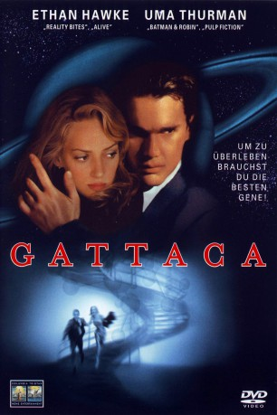

#1499 Gattaca
Auszeichnungen: für 1 Oscars nominiert
 gesehen am 27.12.2015
gesehen am 27.12.2015
 
 IMDB-Wertung: 7.8 / 10
IMDB-Wertung: 7.8 / 10  Metascore: 64
Metascore: 64 
Die Erde in nicht allzuferner Zukunft: Genetische Defekte können inzwischen schon bei der Geburt festgestellt werden, ebenso wie die voraussichtliche Lebenszeit des Neugeborenen. Wer genetisch nicht einwandfrei ist, wird zum Menschen zweiter Klasse ohne Chance auf sozialen Aufstieg, da sich die Mühe nicht lohnt. Vincent Freeman ist einer dieser Unglücklichen, der nur einen Traum hat: einmal für die Gattaca Corp. eine Arbeitsstelle im Weltraum antreten zu können. Um die Vorschriften zu umgehen, nimmt er die Identität eines begabten jungen Mannes an, den ein Unfall aller Chancen beraubt hat. Mit dessen Hilfe erträgt er chirurgische Eingriffe, um die Täuschung perfekt zu machen, immer in Angst, ein verlorenes Haar, eine Hautschuppe oder ein plötzlicher Urintest könnte die Wahrheit ans Licht bringen. Als er seinem Ziel immer näher kommt, verliebt er sich in seine Kollegin Irene.
Jahr: 1997
Dauer: 106 Minuten
FSK: 12
Land: USA Studio: Columbia PicturesTonspuren: DD5.1 - ,
Untertitel:
Auflösung: 1080p (1920x800) Größe: 8519 MB
Genre: Thriller, Drama, Sci-Fi
Regisseur: Andrew Niccol
Drehbuch: Andrew Niccol
Soundtrack: Michael Nyman
Darsteller:
 Ethan Hawke als Vincent Freeman
Ethan Hawke als Vincent Freeman Uma Thurman als Irene Cassini
Uma Thurman als Irene Cassini- Gore Vidal als Director Josef
 Xander Berkeley als Dr. Lamar
Xander Berkeley als Dr. Lamar- Jayne Brook als Marie Freeman
 Elias Koteas als Antonio Freeman
Elias Koteas als Antonio Freeman Maya Rudolph als Delivery Nurse
Maya Rudolph als Delivery Nurse Elizabeth Dennehy als Preschool Teacher
Elizabeth Dennehy als Preschool Teacher Blair Underwood als Geneticist
Blair Underwood als Geneticist- Mason Gamble als Vincent Freeman - Boy
- Chad Christ als Vincent Freeman - Teen
 William Lee Scott als Anton Freeman - Teen
William Lee Scott als Anton Freeman - Teen Ernest Borgnine als Caesar
Ernest Borgnine als Caesar Tony Shalhoub als German
Tony Shalhoub als German Jude Law als Jerome Eugene Morrow
Jude Law als Jerome Eugene Morrow Alan Arkin als Det. Hugo
Alan Arkin als Det. Hugo Ken Marino als Sequencing Technician
Ken Marino als Sequencing Technician- Cynthia Martells als Cavendish
 Loren Dean als Anton Freeman
Loren Dean als Anton Freeman- Gabrielle Reece als Gattaca Trainer
 Dean Norris als Cop on the Beat
Dean Norris als Cop on the Beat- Russell Milton als Gattaca Detective
- George Marshall Ruge als Beaten Detective
- Dan Griffin als Classmate , uncredited
- Beverly Griffith als Anatomy Teacher , uncredited
- Greg Sestero als Gattacan Citizen , uncredited
- Una Damon als Head Nurse
- Vincent Nielson als Anton Freeman - Boy
- Clarence Graham als Personnel Officer
- Carlton Bembry als Gattaca Hoover
- Grace Sullivan als Sequencing Customer
- Ryan Dorin als Twelve-Fingered Pianist
- Steve Bessen als Blood Test Detective
 Lindsey Ginter als Mission Commander
Lindsey Ginter als Mission Commander- Randi Cole als Gattican Citizen , uncredited
- David LeBell als Invalid , uncredited
Datei: X:\1997\Gattaca (1997, FSK12, 1920x800).mkv seit 12.07.2015
Festplatte: HD 1996-2002
 Es gibt insgesamt 83 Filme in der Gruppe '1997'
Es gibt insgesamt 83 Filme in der Gruppe '1997'